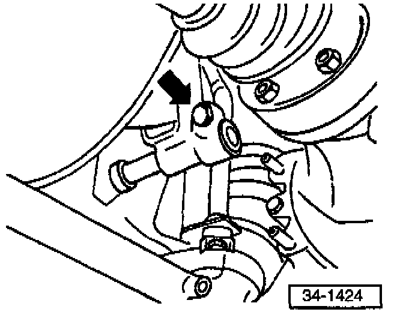
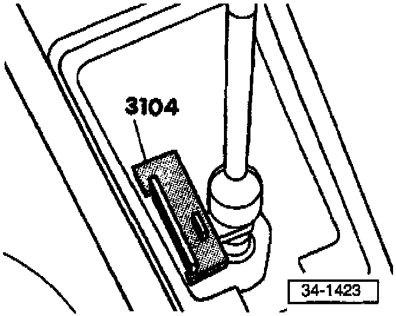
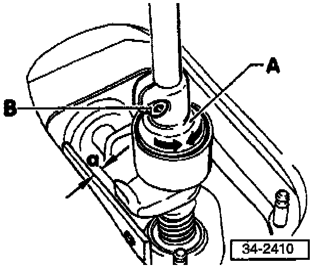

M/T - Hard to Shift
Group: 34Number: 96-04
Date: Dec. 6, 1996
Subject:
Shift Linkage, Incorrect Adjustment
Model(s):
Golf, Jetta with 020
Manual Transmission 1997 --> VM045000
Condition
Transmission is hard to shift (especially when shifting into 1st gear).
Production
Shift linkage adjustment optimized as of:
VIN: VM045001
Service
For all 1997 vehicles up to VIN: VM045000, at the PDI (during the road test) pay particular attention to the shifting characteristics of the transmission (especially when shifting into 1st gear).
If it is determined that the shift linkage requires adjustment, the following linkage adjustment procedure should be performed. (steps are as outlined in Repair Manual W42 011 294 109A Edition 10.96).
Note:
The adjustment procedure must be done completely, DO NOT eliminate any steps.
Shift linkage, adjusting
^ Transmission in neutral

- Loosen clamp -arrow-.
^ Joint between selector rod and shift lever must move easily.
- Remove boot with cover plate and shift knob
--> page 34-18 of Repair manual.

- Insert gauge, tool 3104.
^ Gauge must not jam.
- Align selector rod/shift lever (transmission in neutral) and tighten down clamp.
^ Tightening torque: 20 Nm (15 ft.lb)
- Remove tool.
Caution!
Do not put components under stress.
Operation
Shift lever should rest in 3rd/4th-gear plane with transmission in neutral.
- Shift through all gears.
^ They must engage smoothly without hanging up.
^ Pay particular attention to correct operation of reverse lockout.
If gear fails to engage smoothly during repeated shifting:
- Engage 1st gear.
- Remove play from the shift linkage by pressing shift lever gently to the left at shift knob threads while 1st gear is engaged.

^ Distance between shift lever and gearshift housing travel stop (dimension -a-) must be 1-1.5 mm (0.04 0.06 in.)
- Perform final adjustment by turning eccentric adjuster -A-:
- Loosen clamping bolt -B-.
- Turn eccentric adjuster -A- until dimension -a- is correct.
- Tighten down clamping bolt -B.
^ Tightening torque: 2 Nm (18 in.lb)
Caution!
To achieve a satisfactory adjustment:
^ Shift and linkage components must be in good condition
^ Shift linkage must operate smoothly without excessive resistance
^ Transmission, clutch and clutch release mechanism must be in good condition
Installing shift lever boot and shift knob page 34-18.
Use the following:
Part Identifier: 3415
Labor Operation: 3415610 55 TU